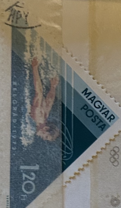
| SOURCE | TITLE| IMAGE MATCH | click to source page |
| Alamy | 1973 man hi-res stock photography and images - Page 3 - Alamy | 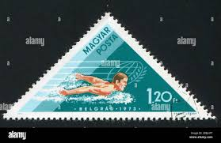 |
| Does anyone know something about this imperforate 5 Franc Belgisk Congo? | 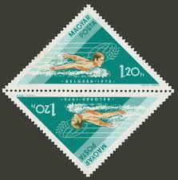 | |
| Alamy | Butterfly stroke hi-res stock photography and images - Alamy | 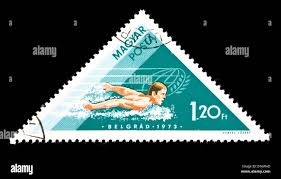 |
| Etsy | Swimming Stamps - Thematic Group of 22 Water Sport Stamps - Etsy |  |
| eBay | Hungary 1952 Helsinki Olympic Games CNH SC # 1000 - 1003 , C107 - C108 | eBay | 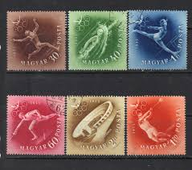 |
| Shutterstock | 3+ Thousand "magyar Posta" Royalty-Free Images, Stock Photos & Pictures | Shutterstock | 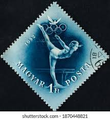 |
| Free stamp catalogue | Stamps from Hungary - Freestampcatalogue.com - The free online stampcatalogue with over 500.000 stamps listed. | 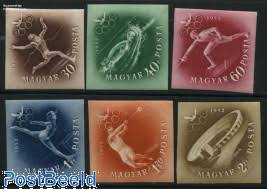 |
| Allstamp | Slovakia B21-24, 1943 Sports: Allstamp.net |  |
| Shutterstock | 5+ Thousand Posta Royalty-Free Images, Stock Photos & Pictures | Shutterstock | 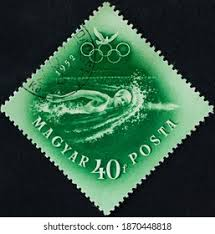 |
| Oldlouis | 1951 1ft Hungary, MISSING Perforation, Margin | Lot 1246 | Oldlouis Auctions | 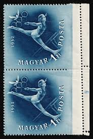 |
| iStampGallery.com (@iStampGallery) • Facebook | 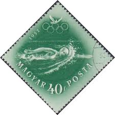 | |
| Todocolección | juegos olímpicos de helsinki - Buy Antique stamps of Hungary on todocoleccion | 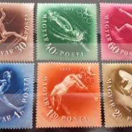 |
| eBay | Olympics Hungarian Stamp Blocks for sale | eBay | 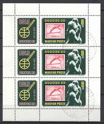 |
| Find Your Stamps Value | Value of magyar posta olympics 1952 stamps | 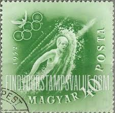 |
| Shutterstock | 5+ Thousand "finland Stamp" Royalty-Free Images, Stock Photos & Pictures | Shutterstock |  |
| Dreamstime.com | Vintage Waterpolo Stock Photos - Free & Royalty-Free Stock Photos from Dreamstime |  |
| Shutterstock | 7+ Thousand Series_international_stamps Royalty-Free Images, Stock Photos & Pictures | Shutterstock | 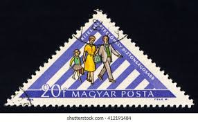 |
| Shutterstock | Karnal Haryana India -august 7th 2025-closeup Stock Photo 2673889131 | Shutterstock | 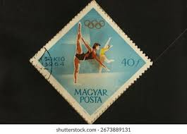 |
| eBay | Hungary 1952, Mi#1247-52, Sc#1000-03+C107-8, perf+imper, Helsinki Olympics, MNH! | eBay | 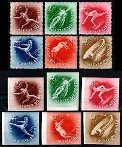 |
| eBay | Water Sports Asian Stamps for sale | eBay | 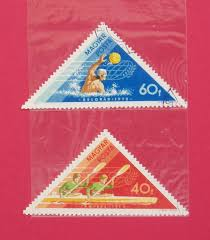 |
| eBay | 6 Number Hungarian Stamps for sale | eBay | 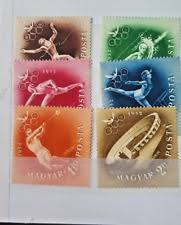 |
| Shutterstock | 3+ Thousand Magyar Posta Royalty-Free Images, Stock Photos & Pictures | Shutterstock | 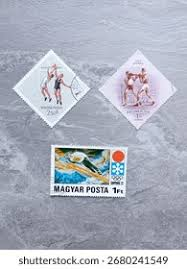 |
| eBay UK | Hungary 1952, Mi#1247-52, Sc#1000-03+C107-8, perf+imper, Helsinki Olympics, MNH! | eBay UK | 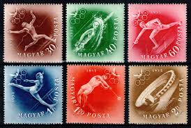 |
| eBay | Water Sports Hungarian Stamps for sale | eBay | 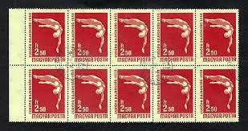 |
| eBay | Sport. 1952 Helsinki Olympics. | eBay | 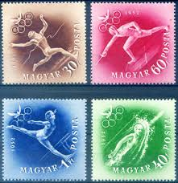 |
| The Philately | Hungary 1973 Mi 2919A-2925A Hungarian Victories in Water Sports at Tampere and Belgrade Sc 2261-2267 for sale at The Philately |  |
| Etsy | Swimming Stamps - Thematic Group of 22 Water Sport Stamps - Etsy Canada | 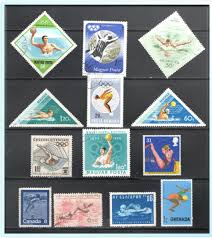 |
| Todocolección | hungria 1958 scott j241 sello º postage due num - Buy Antique stamps of Hungary on todocoleccion |  |
| Dreamstime.com | Len Shows Stock Photos - Free & Royalty-Free Stock Photos from Dreamstime | 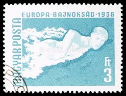 |
| Skate Guard Blog | The 1963 European Figure Skating Championships | 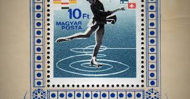 |
| Shutterstock | 8+ Thousand 1973 Postage Stamp Royalty-Free Images, Stock Photos & Pictures | Shutterstock |  |
| eBay | HUNGARY UNGARN 1980 Klb 3432 A 2649 PERF NORWEX 80 stamp on stamp Ski Jump MNH | eBay | 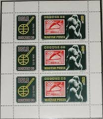 |
| Colnect | Stamp: Gymnastics (Hungary(Summer Olympic Games 1964 - Tokyo (I)) Mi:HU 2032A,Sn:HU 1599,Yt:HU 1650,Sg:HU 2000,AFA:HU 1988,Phi:HU 2077 📮 | 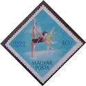 |
| Shutterstock | Hungary Circa 1953 Stamp Printed Hungary Stock Photo 168845459 | Shutterstock | 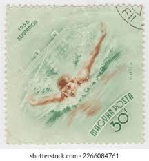 |
| HipStamp | Hungary Stamp: 1952 SC#1000-3 Olympic Games-Helsinki'52 CTO Stamp set- Rare- | Europe - Hungary, General Issue Stamp / HipStamp | 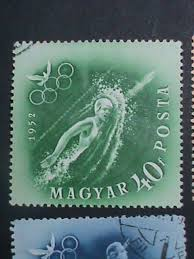 |
| Shutterstock | Hungary 1952 May 26 40 Fillers Stock Photo 2266009241 | Shutterstock | 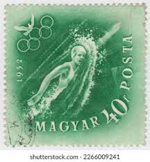 |
| escolacaritas.com.br | HUNGARY IMPERFORATE | 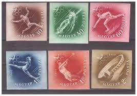 |
| eBay | F-EX51106 HUNGARY MLH 1952 OLYMPIC GAMES HELSINKI ATHLETISM FENCING GYMNASTICS. | eBay | 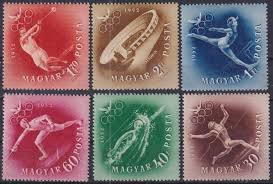 |
| chromorange | photostock | Microscopic view of wood cell structure creating an abstract background - PHOTOSTOCK AGENCY CHROMORANGE | 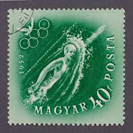 |
| Alamy | SLOVAKIA - CIRCA 1939 : Cancelled postage stamp printed by Slovakia, that shows portrait of worker in the forest , circa 1939 Stock Photo - Alamy | 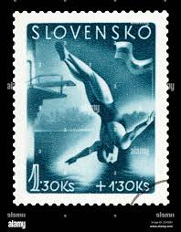 |
| Delcampe | Summer 1952: Helsinki - 1952 Swimming, schwimmen, pigeon, Helsinki Olympics, Hungary, Mi. 1248, MNH | 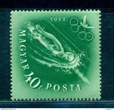 |
| Alamy | HUNGARY - CIRCA 1952: stamp printed by Hungary, shows portrait of Ilona Zrinyi, circa 1952 Stock Photo - Alamy | 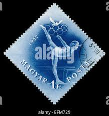 |
| Hi members I hope everyone is well. I recently inherited a rather large stamp collection consisting of stamps from around the globe during the 1900's. I Have a couple of albums as |  | |
| Old-Stamps.com | Postage stamps with Olympics(page 9) | 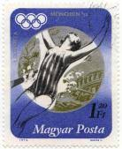 |
| stampsonstamps.org | Hungary | 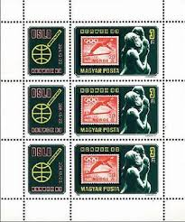 |
| eBay | Hungary Sport swimming stamp 1950 A-14 | eBay | 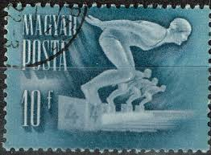 |
| Shutterstock | Barbados Circa 1965 Stamp Printed Barbados Stock Photo 510019903 | Shutterstock | 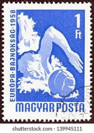 |
| eBay | Hungary SC 920-4, C826 VFU (9gfj) | eBay | 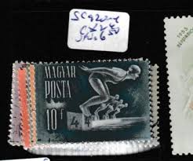 |
| eBay | Cancelled to Order/CTO Postage Olympics Postal Stamps for sale | eBay | 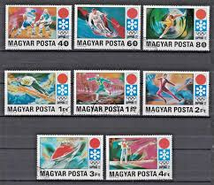 |
| buyhungarianstamps.com | Hungary Airmail – Eastern Europe Postage Stamps | Hungaria Stamp Exchange | 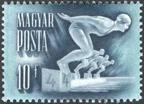 |
| sellosmundo.com | Magyar 40f Posta. . Hungary Europe ref. 407767 | 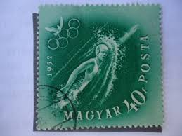 |
| eBay | 1960 Hungary Squaw Valley Olympics 5 Used Stamps #260st | eBay | 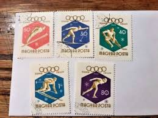 |
| Amazon.com | Amazon.com: Hungary block34a (Complete.Issue.) 1962 Fútbol-WM 1962 in Chile (Sellos para coleccionistas) Fútbol : Juguetes y Juegos | 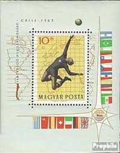 |
| eBay | Slovakia Scott #B21-B24 MH Mi 147-150 Sport 1944 Soccer Skier Diver, Relay Race | eBay | 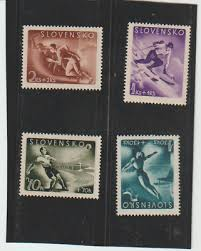 |
| eBay | Hungary, Postage Stamp, #1416 Sheet Creased Hinged, 1548-54, B234 NH Mint | eBay | 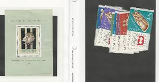 |
| Shutterstock | Gold Medal Winner Stamp: Over 596 Royalty-Free Licensable Stock Photos | Shutterstock | 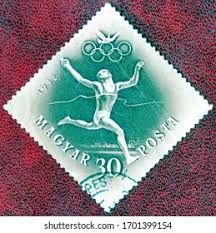 |
| Shutterstock | Czechoslovakia Circa 1954 Stamp Printed Czechoslovakia Stock Photo 85265554 | Shutterstock | 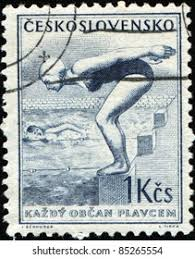 |
| eBay | Hungary 1988. Olympics Seoul set MNH (**) Mi.: 3959-3962 / 3.50 EUR | eBay | |
| eBay UK | Hungarian Cover Stamps for sale | eBay UK | |
| Mystic Stamp | Worldwide - Europe - Hungary - Page 1 - Mystic Stamp Company |